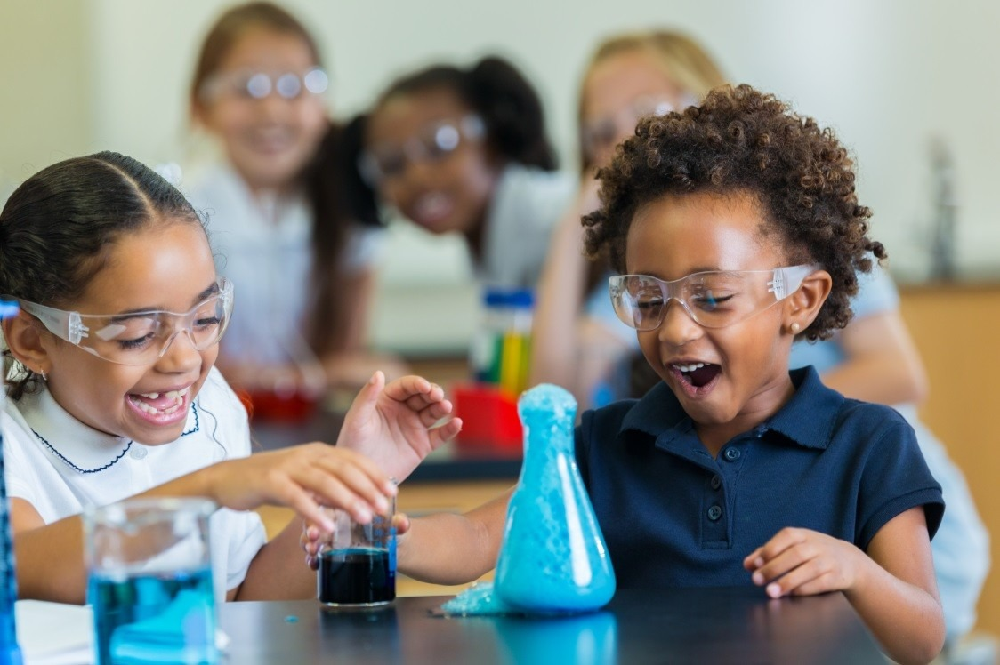

Um site de notícias da escola Albatroz.

Um site de notícias da escola Albatroz.
Data da Publicação: 03/05/2024 19:36:00
Autores:Luana Salazar Silveira dos Santos, Turma 91
Para muitos jovens, encontrar o equilíbrio entre os estudos e a diversão pode ser um desafio. No entanto, é essencial manter um bom equilíbrio para garantir o sucesso acadêmico e o bem-estar pessoal. Nesta matéria, vamos explorar algumas dicas práticas para conciliar responsabilidades acadêmicas com momentos de lazer.
**Tópico 1: Organização e Planejamento:** Uma das chaves para conciliar estudos e diversão é a organização. Criar um cronograma de estudos, estabelecer metas realistas e priorizar tarefas podem ajudar os jovens a administrar seu tempo de forma eficiente, deixando espaço para atividades recreativas.
**Tópico 2: Autocuidado e Descanso:** É fundamental reservar tempo para o autocuidado e o descanso. Manter uma rotina de sono adequada, praticar exercícios físicos e reservar momentos de relaxamento contribuem para a saúde mental e o bem-estar, permitindo que os jovens estejam mais equilibrados em suas atividades diárias.
**Tópico 3: Explorando Novas Experiências:** Mesmo durante períodos intensos de estudos, é importante reservar momentos para explorar novas experiências e se divertir. Participar de atividades extracurriculares, conhecer novas pessoas e explorar hobbies pode trazer um equilíbrio saudável à vida acadêmica.
**Conclusão:** Encontrar o equilíbrio entre os estudos e a diversão é fundamental para o desenvolvimento pessoal e acadêmico dos jovens. Ao aplicar essas dicas, os estudantes podem desfrutar de uma rotina mais equilibrada, alcançando sucesso acadêmico sem abrir mão das experiências enriquecedoras que a vida tem a oferecer.